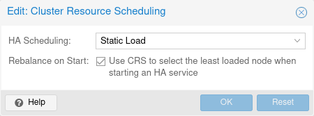

The cluster resource scheduler (CRS) mode controls how HA selects nodes for the
recovery of a service as well as for migrations that are triggered by a
shutdown policy. The default mode is basic, you can change it in the Web UI
(Datacenter → Options), or directly in datacenter.cfg:
crs: ha=static

The change will be in effect starting with the next manager round (after a few seconds).
For each service that needs to be recovered or migrated, the scheduler iteratively chooses the best node among the nodes that are available to the service according to their HA rules, if any.
There are plans to add modes for (static and dynamic) load-balancing in the future.
The number of active HA services on each node is used to choose a recovery node. Non-HA-managed services are currently not counted.
The static mode is still a technology preview.
Static usage information from HA services on each node is used to choose a recovery node. Usage of non-HA-managed services is currently not considered.
For this selection, each node in turn is considered as if the service was already running on it, using CPU and memory usage from the associated guest configuration. Then for each such alternative, CPU and memory usage of all nodes are considered, with memory being weighted much more, because it’s a truly limited resource. For both, CPU and memory, highest usage among nodes (weighted more, as ideally no node should be overcommitted) and average usage of all nodes (to still be able to distinguish in case there already is a more highly committed node) are considered.
The more services the more possible combinations there are, so it’s currently not recommended to use it if you have thousands of HA managed services.
The CRS algorithm is not applied for every service in every round, since this would mean a large number of constant migrations. Depending on the workload, this could put more strain on the cluster than could be avoided by constant balancing. That’s why the Proxmox VE HA manager favors keeping services on their current node.
The CRS is currently used at the following scheduling points:
HA rule config changes (always active). If a rule emposes different constraints on the HA resources, the HA stack will use the CRS algorithm to find a new target node for the HA resources affected by these rules depending on the type of the new rules:
ha-rebalance-on-start
CRS option in the datacenter config. You can change that option also in the
Web UI, under Datacenter → Options → Cluster Resource Scheduling.